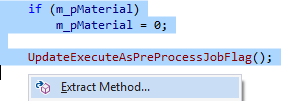
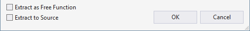

Extract Method
Open the Quick Action and Refactoring menu (Shift+Alt+Q) to move a selection of code into a separate method, and then replace the selection with a call to the extracted method. Extract multiple lines or a segment of one. Visual Assist determines the appropriate return value and parameter list for the new method.

In C/C++, Extract Method creates an inline method by default. In the dialog that prompts for a method name, extract as a free function or extract directly to source.

Learn more.